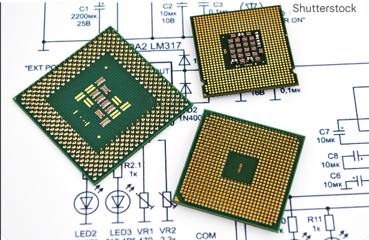

1. පරිගණක පද්ධතියක මූලික ලක්ෂණ
සාදරයෙන් පිළිගනිමු මෙම නිබන්ධනයට!
මෙහිදී අපි පරිගණක පද්ධතියක් යනු කුමක්ද, එහි ප්රධාන කොටස්, ආදාන/නිමැවුම් උපකරණ සහ පරිගණකය ක්රියාත්මක වන ආකාරය පිළිබඳව විස්තරාත්මකව ඉගෙන ගනිමු.
හැඳින්වීම
පරිගණක පද්ධතියක් (Computer System) තොරතුරු සැකසීම, ගබඩා කිරීම සහ ලබා ගැනීම සඳහා එකට වැඩ කරන දෘඪාංග (hardware) සහ මෘදුකාංග (software) සමූහයකි. එහි මූලික ලක්ෂණ පහත පරිදි කොටස් කර විස්තර කළ හැක.
1. පරිගණකයක මූලික කොටස්
පරිගණක පද්ධතියක් සාමාන්යයෙන් ප්රධාන කාණ්ඩ තුනකට බෙදා දැක්විය හැකිය.
1.1 දෘඪාංග (Hardware)
දෘඪාංග යනු පරිගණකයක ස්පර්ශ කළ හැකි, භෞතික කොටස් වේ.
- මධ්යම සැකසුම් ඒකකය (CPU - Central Processing Unit):
මෙය පරිගණකයේ "මොළය" ලෙස හැඳින්වේ.
සියලුම උපදෙස් සහ දත්ත සැකසීම සිදු කරන්නේ මෙහිදීය.  - මවු පුවරුව (Motherboard):
ප්රධාන මුද්රිත පරිපථ පුවරුව (PCB) වන අතර, CPU, මතකය (RAM), ගබඩා උපාංග සහ අනෙකුත් සියලුම උපාංග එකිනෙකට සම්බන්ධ කරන ප්රධානම කොටසයි. - මතකය (Memory):
තාවකාලික ප්රවේශ මතකය RAM (Random Access Memory): පරිගණකය ක්රියාත්මක වන විට දත්ත සහ වැඩසටහන් තාවකාලිකව ගබඩා කරයි. මෙය වේගවත් නමුත් විදුලිය විසන්ධි වූ විට දත්ත මැකී යයි (volatile).
ස්ථිර මතකය ROM (Read-Only Memory): පරිගණකය ආරම්භ කිරීමට (boot up) අවශ්ය මූලික උපදෙස් ස්ථිරව ගබඩා කරයි. මෙය ස්ථාවරය (non-volatile).
- මෙහෙයුම් පද්ධතිය (Operating System - OS): පරිගණකයේ දෘඪාංග සහ මෘදුකාංග සම්පත් කළමනාකරණය කරයි. (උදා: Windows, macOS, Linux).
- යෙදුම් මෘදුකාංග (Application Software): විශේෂිත කාර්යයන් ඉටු කිරීමට පරිශීලකයාට උපකාර කරයි. (උදා: Word, Web Browsers).
1.2 මෘදුකාංග (Software)
මෘදුකාංග යනු පරිගණකයක දෘඪාංග ක්රියාත්මක කිරීමට උපදෙස් දෙන සහ කාර්යයන් ඉටු කරන වැඩසටහන් සහ දත්ත සමූහයකි.
2. ආදාන/නිමැවුම් උපකරණ
2.1 ආදාන උපකරණ (Input Devices)
- යතුරු පුවරුව (Keyboard) : අකුරු, සංඛ්යා සහ සංකේත ඇතුළත් කිරීමට.
- මූසිකය (Mouse) : තිරය මත කර්සරය (cursor) පාලනය කිරීමට සහ අයිතම තේරීමට.
- ස්කෑනරය (Scanner) : මුද්රිත ලේඛන හෝ රූප ඩිජිටල් දත්ත බවට පරිවර්තනය කිරීමට.
- මයික්රෆෝනය (Microphone) : ශබ්ද දත්ත ඇතුළු කිරීමට.
2.2 නිමැවුම් උපකරණ (Output Devices)
- මොනිටරය (Monitor): දෘශ්ය තොරතුරු (රූප, වීඩියෝ, පෙළ) ප්රදර්ශනය කිරීමට.
- මුද්රණ යන්ත්රය (Printer): ඩිජිටල් දත්ත කඩදාසි මත මුද්රණය කිරීමට.
- ස්පීකර් (Speakers): ශ්රව්ය නිමැවුම් ලබා දීමට.
3. ගබඩාකරණය (Storage)
දත්ත සහ වැඩසටහන් ස්ථිරව තබා ගැනීම සඳහා ගබඩා උපාංග භාවිතා කරයි.
3.1 ප්රාථමික ගබඩාකරණය (Primary Storage)
- මතකය (RAM): CPU මඟින් කෙලින්ම ප්රවේශ වන තාවකාලික ගබඩාවයි.
3.2 ද්විතියික ගබඩාකරණය (Secondary Storage)
- දෘඪ තැටිය (Hard Disk Drive - HDD): චුම්බක තැටි භාවිතයෙන් දත්ත ගබඩා කරයි.
- ඝන තත්වයේ ධාවකය (Solid State Drive - SSD): Flash memory භාවිතයෙන් වඩා වේගවත් වේ.
- පෙන් ඩ්රයිව් (Pen Drive): දත්ත රැගෙන යාමට පහසු උපාංග.
- DVD/CD තැටි: දත්ත ප්රකාශීයව (optically) ගබඩා කරයි.
4. පරිගණකය ක්රියාත්මක වීම
පරිගණකයක් ක්රියාත්මක වීමේ මූලික ක්රියාවලිය IPOS චක්රය ලෙස හැඳින්වේ.
- ආදානය (Input): පරිශීලකයා ආදාන උපාංගයක් (යතුරු පුවරුව, මූසිකය වැනි) හරහා පරිගණකයට දත්ත හෝ උපදෙස් ඇතුළත් කරයි.
උදා: යතුරු පුවරුවෙන් 'A' අකුර යතුරු ලියනය කිරීම. - සැකසීම (Processing):ඇතුළත් කළ දත්ත CPU මඟින් ගෙන, උපදෙස් අනුව විශ්ලේෂණය කර සහ ගණනය කිරීම් සිදු කරනු ලැබේ. මෙම ක්රියාවලියේදී RAM භාවිත කෙරේ.
උදා: 'A' අකුර පරිගණකයට තේරෙන ද්විමය කේතයක් බවට පරිවර්තනය කිරීම. - නිමැවුම (Output):සැකසූ ප්රතිඵල නිමැවුම් උපකරණයක් (මොනිටරය වැනි) හරහා පරිශීලකයා වෙත ඉදිරිපත් කෙරේ. උදාහරණය: පරිවර්තනය කරන ලද දත්ත මොනිටරයේ 'A' අකුර ලෙස ප්රදර්ශනය කිරීම.
උදා: මොනිටරයේ 'A' අකුර ලෙස ප්රදර්ශනය කිරීම. - ගබඩාකරණය (Storage): අනාගත ප්රයෝජනය සඳහා SSD/HDD වැනි උපාංගයක සුරැකේ.
මේ ආකාරයට, පරිගණක පද්ධතියක් දෘඪාංග සහ මෘදුකාංගවල සුසංයෝගී ක්රියාකාරිත්වය තුළින් දත්ත කළමනාකරණය හා සැකසීම සිදු කරයි.
පුහුණු ප්රශ්න
- පරිගණකයක "මොළය" ලෙස හඳුන්වන්නේ කුමක්ද?
- RAM සහ ROM අතර ඇති ප්රධාන වෙනස කුමක්ද?
- ස්පීකරයක් අයත් වන්නේ කුමන උපකරණ කාණ්ඩයටද? (ආදාන/නිමැවුම්)
- පරිගණක ක්රියාවලියේ මූලික පියවර 4 (IPOS) ලැයිස්තුගත කරන්න.